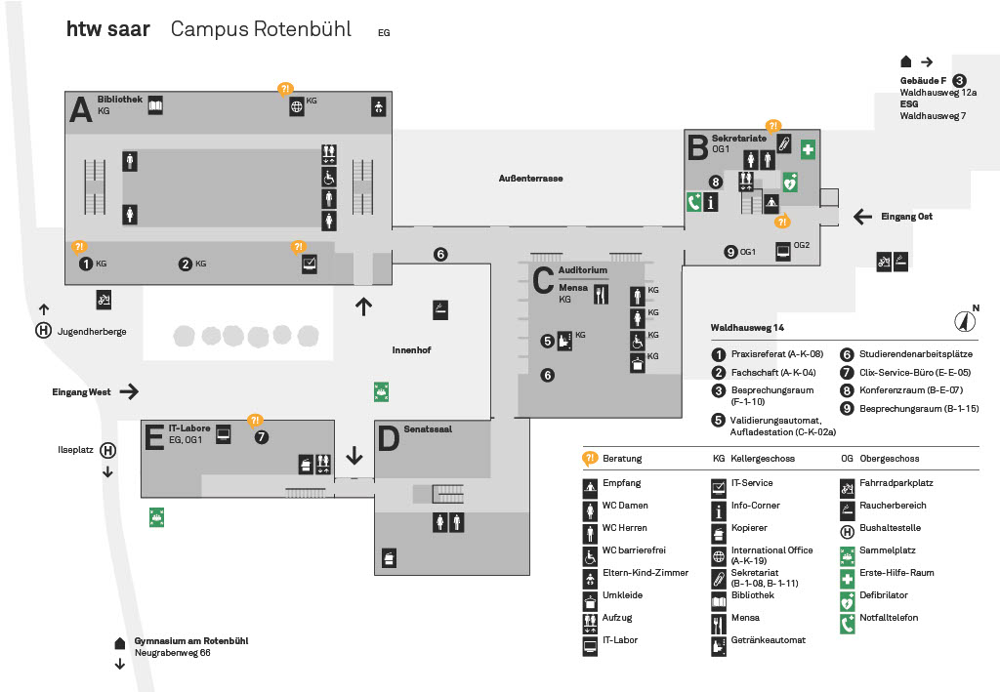

Willkommen in Gebäude C. Die wichtigsten Einrichtungen hier sind die Mensa und das Auditorium
Auditorium: Das Auditorium befindet sich in der Mitte von Gebäude C und ist der einzige Raum dort im Erdgeschoss
Mensa: Die Mensa befindet sich im Keller, wenn man die Treppe heruntergeht. Neben dem Eingang zur Mensa sind auch die Toiletten
Lageplan:
